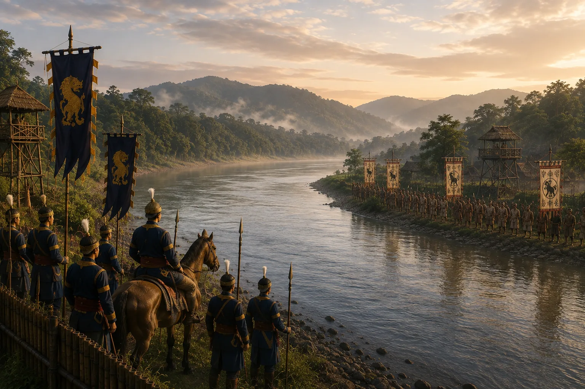

Frontier Standoff on the Dikhou River
c. 1270 · The coming of Sukaphaa

Ahom expanding settlements encounter the Kachari Kingdom's eastern outpost along the Dikhou River.
Sources have not yet been catalogued for this record.
People: Suteuphaa
Open this scene in the interactive archive · Follow this event on MAP